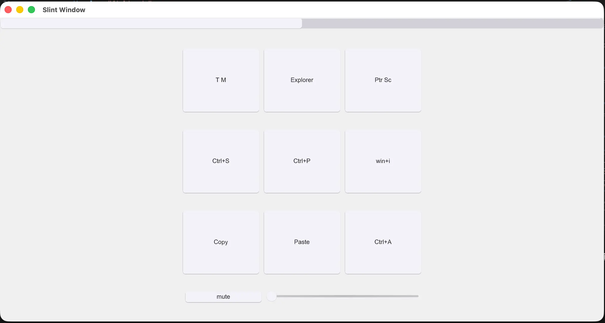
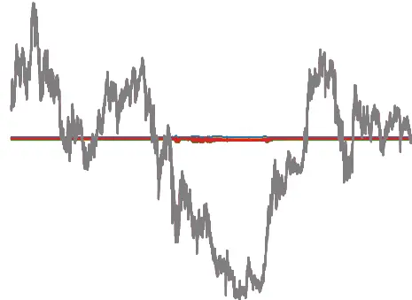
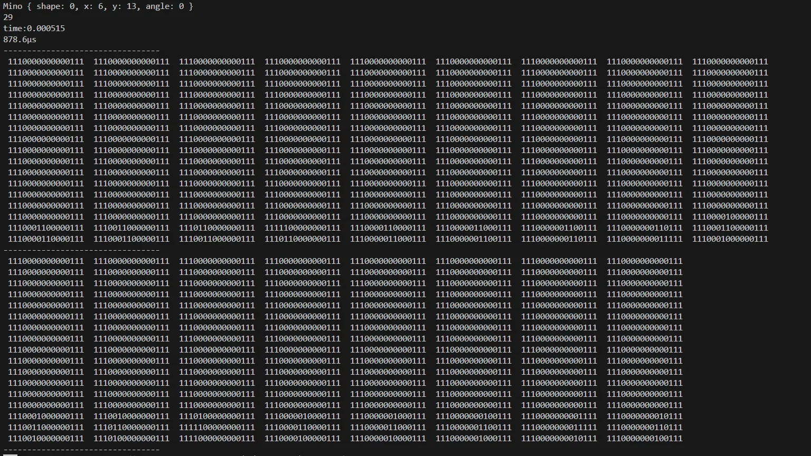
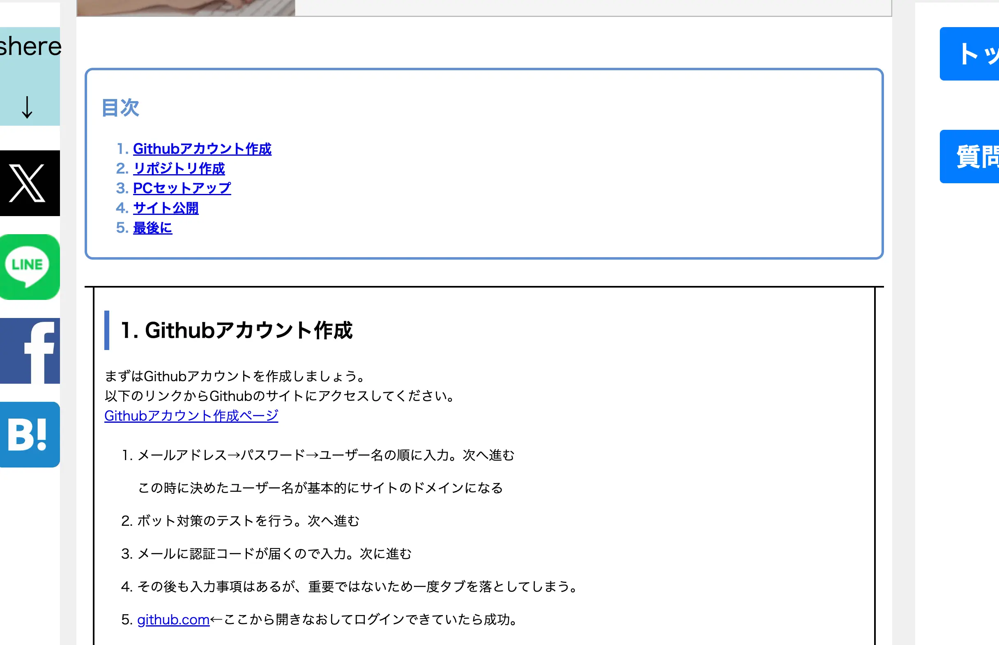
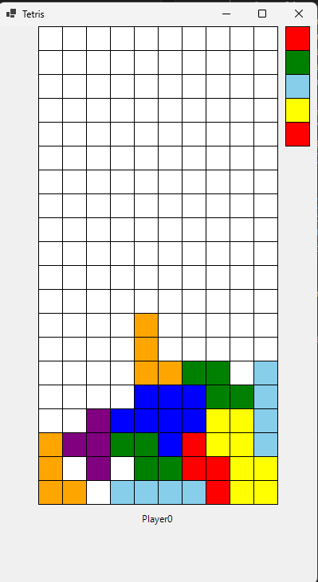
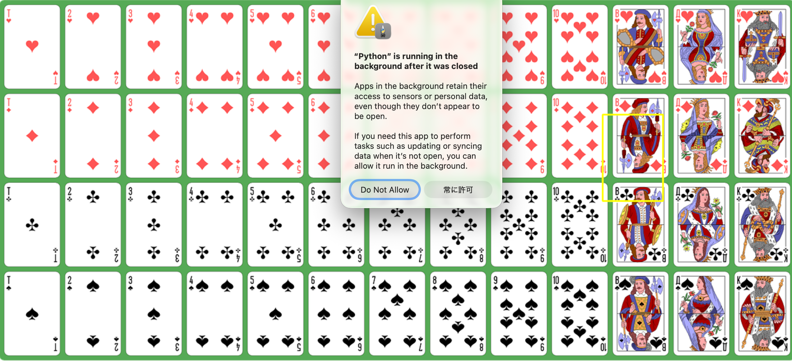

ぽーとふぉりお
小室 明輝
このページでは、私がこれまでに挑戦してきたことや、身につけてきた技術をまとめています。
実践を通して学んだこと、個人的に深く掘り下げた技術、そして創意工夫して作り上げた作品をまとめました。
本ページでは、すべての活動を網羅しているわけではありませんが、私の技術的な関心や成長の軌跡を感じていただける内容になっているかと思います。
技術と向き合う姿勢やものづくりへの想いが、少しでも伝われば嬉しいです。
1. プロフィール
| 名前 | 小室 明輝 |
|---|---|
| 学部・学科 | 日本工業大学 先進工学部 データサイエンス学科 |
| 学年 | 3年生 |
| 趣味 | プログラミング、創作物の制作 |
私は日本工業大学先進工学部データサイエンス学科の現在3年生です
マイクロコンピュータ研究部という部活動に所属しています。
趣味で様々な創作物を作成しており、主にプログラムを行なっています
大学に入学してからITを中心に様々な知識を蓄えてきました。
2. 作品ギャラリー
-
アプリ・システムなど
Useful Device
全OS対応のクロスプラットフォーム便利アプリを目指しました
部員が使うことを想定して、あったら便利な機能を追加しています
現在もより良いものを目指し、改良中です
- 使用技術: mdns、Bonjour、Slint、Rust、非同期、通信など
- 制作期間: 3ヶ月 作成人数: 2人
- GitHub: Useful Device
FX_予測AI
初めてのpython、AIで、学習を目指し作ったものです
正規化などデータ加工を頑張りました
- 使用技術: Python、matplot、keras、NumPy、並列化、GPU学習など
- 制作期間: 1ヶ月
- GitHub: FX_予測AI
テトリスの探索
より早く、より多くの場面を探索することを目標としました
GPUプログラミングや、Simdなどの計算技術や
ハッシュマップを用いたアルゴリズム、並列化など多くの工夫をしました
- 使用技術: C++、Rust、python、CUDA、Simd、データ構造、並列化(rayon)、pyO3
- 制作期間: 2ヶ月
- GitHub: テトリスの探索
-
ウェブサービス
My WebSite
実際にgoogleやbingにサイトを載せて、最大5000アクセス/日を達成しました
静的コンテンツしか書けない中で、JSによるテンプレート化を成功させました
- 使用技術:GitHub Pages、 HTML/CSS/JavaScript、SEO、ruby(jekyll)、PageClipなど
- 制作期間: １ヶ月
- GitHub: My WebSite
-
ゲーム
テトリス
C++でDllファイル、C#でGUIを担当したテトリスです
別プロセスがメモリポインタをたどって簡単に通信できるように作りました。
C#の中でプレイヤーを生成してるため、同時に何人でもプレイできます
- 使用技術: C++、C#、Dll、Eigen、共有メモリ、行列操作
- 制作期間: 2週間
- GitHub: テトリス
VRバドミントン

Meta Questを使用してプレイできる２人用VRバドミントンです。
Unreal Engine5でブループリントを使い、開発しました。
5人での分担分けをして、私はシステム部分を担当しました。
- 使用技術: Unreal Engine5、同期処理、APKビルド
- 制作期間: 1ヶ月
- 作成人数: 5人
作品3
作品3の説明文...
3. Skills
使用言語・ライブラリ / 使用歴
- Eigen（行列計算ライブラリ。回転、抽出、ポインタ操作など）
- Windows API（ネイティブなGUI制御、タイマー処理、スレッド操作など）
- conio（コンソール入出力ライブラリ。キー入力、画面制御など）
- CUDA（GPUプログラミング。カーネル操作、C++のSTLの実装、全探索、ビット操作など）
- Arduino（マイコン制御。基本的な入出力、モータ制御など）
- NumPy（行列計算ライブラリ。行列演算、データ加工など）
- matplotlib（グラフ描画ライブラリ。データの可視化、グラフ作成など）
- keras（機械学習ライブラリ。ニューラルネットワークの構築、学習など）
- pandas（データ解析ライブラリ。データフレーム操作、データ加工など）
- pyO3（RustとPythonの相互運用ライブラリ。Rustで書いたコードをPythonから呼び出すなど）
- Nuitka（pythonをC++でコンパイル。アプリ化に使用）
- multiprocessing（並列処理。各スレッドの分割処理など）
- Slint（GUIライブラリ。クロスプラットフォームのGUIアプリケーション開発）
- zeroconf（avahi、BonjourのRust実装。ネットワークサービスの検出）
- rayon（並列処理ライブラリ。データ並列処理、スレッド管理など）
- tokio（非同期処理ライブラリ。非同期でのネットワーク通信、入出力処理など）
- enigo（Windows、macOSのネイティブAPI。音声管理、キーボード入力など）
- pyO3（PythonとRustの相互運用ライブラリ）
- Simd（複数の数字を1つとして扱う。bit行列の計算で特に有効）
- bytemusk（byte列を扱うライブラリ。生のプロセスポインタを安全な型に変換）
- Unity Script（ゲームエンジンで使用。当たり判定や物理演算など）
- Windows API（GUI制御。タイマー処理、スレッド操作など）
- DllImport（動的ライブラリのインポート。C++で書いたDLLをC#から呼び出すなど）
- HTML（SEOに則った書き方。headタグによるさまざまな設定等）
- CSS（文字のスタイル設定、左右に置くなどの配置設定）
- JavaScript（pageclipによるコメント欄の作成、テンプレート化による動的なコンテンツ生成）
- R（統計解析。データの可視化、統計的分析など）
- SQL（データベース操作。データの取得、更新、削除など）
- Ruby（Jekyllを使用した静的サイトジェネレーター）
- VBA（ファイル書き込み、GUI操作、シリアル通信、表操作など）
- Swift（Rustで作成したランタイム付きの静的ライブラリをiosAppとしてビルド、また、基礎的なGUIデザインを検証）
- Go（webサーバーの構築、ゴルーチンによる並列処理、HTTPリクエストの処理など）
5. 最後に
長々とした本ポートフォリオを読んでいただき、ありがとうございます。
私の最終目標は"何でもできること"ですが、まだまだ目標には程遠いですし、叶わない目標だと認知しています。
しかし、だからこそ、生涯精進していきたいです。
今後も新しい技術と出会い、挑戦し続けることで、少しずつでも理想に近づいていけたらと思います。